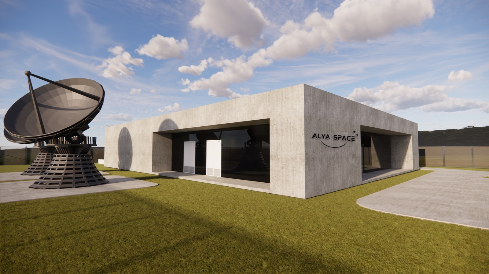
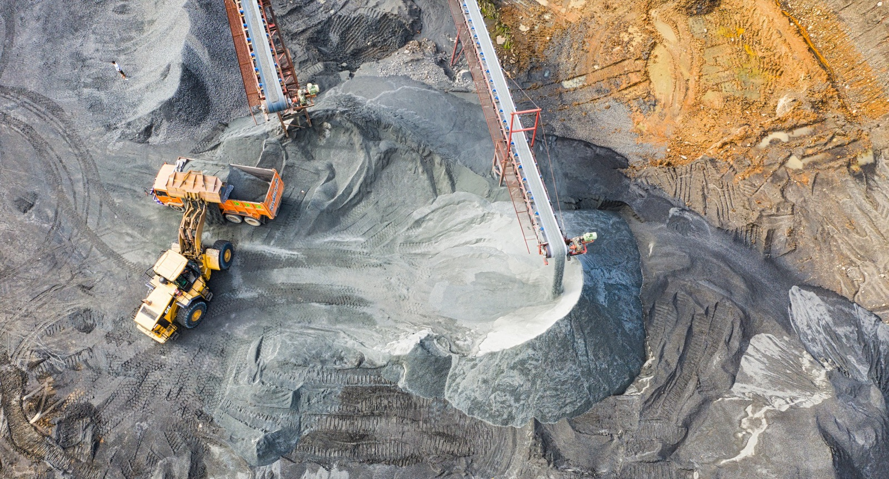
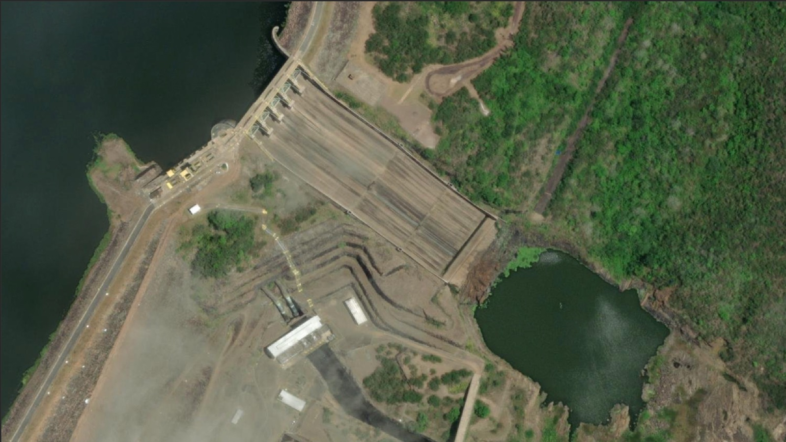
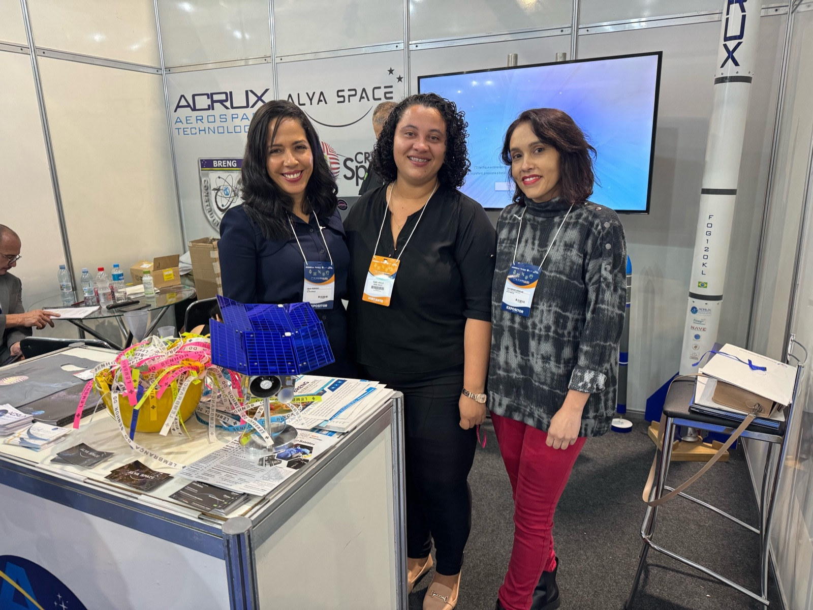
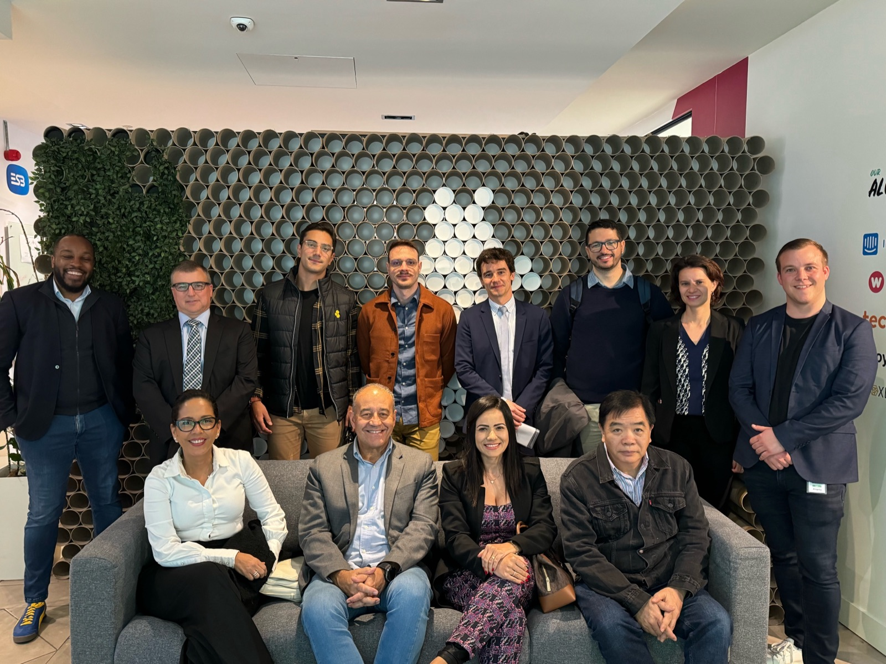

咖啡种植园
对比 4 年前与当前影像，证明没有毁林。报告符合欧盟毁林法规（EUDR），也可提交给贷款方。
| 行业 | 出口合规 |
|---|---|
| 数据 | 光学影像，相隔四年 |
| 交付 | EUDR 毁林核查报告 |
光学卫星看清地块细节和作物长势；雷达卫星昼夜成像、穿透云层，雨季也不再是盲区。设计和申报已经完成，下一步是研制。

| 星座 | 216 颗卫星，24 个轨道面 |
|---|---|
| 每个轨道面 | 7 颗光学 + 2 颗 SAR 雷达卫星 |
| 光学 | 0.5 米全色 + 近红外 |
| 雷达 | 穿透云层，昼夜成像 |
| 部署 | 分两期：Alya-1 与 Alya-2，各 108 颗 |
| ITU 申报 | 网络代号 ALYASPC，经巴西 ANATEL 提交已提交 |
| 频率许可 | ANATEL已获批 |
| 首次发射 | 2028 年目标 |

巴西 6 个已获许可的地面站站址。首站位于巴伊亚州图卡诺，已完成总体规划和建筑方案；巴伊亚州政府支持在州科技园设立控制中心。
设计效果图图卡诺地面站，巴伊亚州


定标场位于巴西东北部半干旱区的图卡诺站址，全年云量少，可安排的过境观测次数多。
光学传感器用地面反射靶标定标，SAR 雷达用角反射器定标。定标场服务我们自己的卫星，也可以为其他运营商提供定标服务。

AgriEasy 农易在香港研发：把卫星影像和气象数据交给 AI 分析，再给中小农户推送作物提示。农户免费使用，银行、保险公司和出口商按面积付费。
每个试点都走完了完整流程：采集数据、分析、编写报告、交付，全部使用中国卫星数据。现在我们正把这套流程开发成自动化平台。
对比 4 年前与当前影像，证明没有毁林。报告符合欧盟毁林法规（EUDR），也可提交给贷款方。
| 行业 | 出口合规 |
|---|---|
| 数据 | 光学影像，相隔四年 |
| 交付 | EUDR 毁林核查报告 |

对低收入农业社区补种的原生树进行卫星计数与监测，报告成为碳信用买家认可的核查文件。
| 行业 | 碳市场 |
|---|---|
| 数据 | 光学影像，逐棵计数 |
| 交付 | 供碳信用买家使用的核查报告 |

为巴西一个大型矿区按月持续监测，协调多家卫星运营商的数据，按时交付。
| 行业 | 矿业，巴西 |
|---|---|
| 数据 | 多家运营商的光学数据 |
| 交付 | 每月监测报告 |
客户名称受保密协议约束，不予公开。图片仅作示意。



Aila、Jianguo Chai 和 Ruoyu Li 自 2023 年起一起交付了全部试点项目；Rhea 负责把这套流程做成 AI 平台。

创始人兼 CEO
Alya Space、Alya Nanosatellites 与玉航天创始人，负责星座设计；巴西空军 Amazonia 4.0 挑战赛冠军。

CTO · 卫星与地面系统
主持尼日利亚、委内瑞拉、巴基斯坦、阿尔及利亚等 20 多个卫星项目的地面站建设。

CTO · GeoAI
地球物理与机器学习背景；斯伦贝谢（SLB）机器学习研究，奥雅纳（Arup）、辉固（Fugro）香港。负责 AI 平台研发。

COO · 遥感与数据融合
遥感工程师，新加坡国立大学应用地理信息系统硕士；多源卫星与无人机数据处理。




我们正在与卫星制造商和发射服务商、地面站与定标场伙伴、卫星数据供应商，以及希望从卫星数据中获得答案的银行、保险公司和农业企业洽谈合作。
aila@alyaspace.com